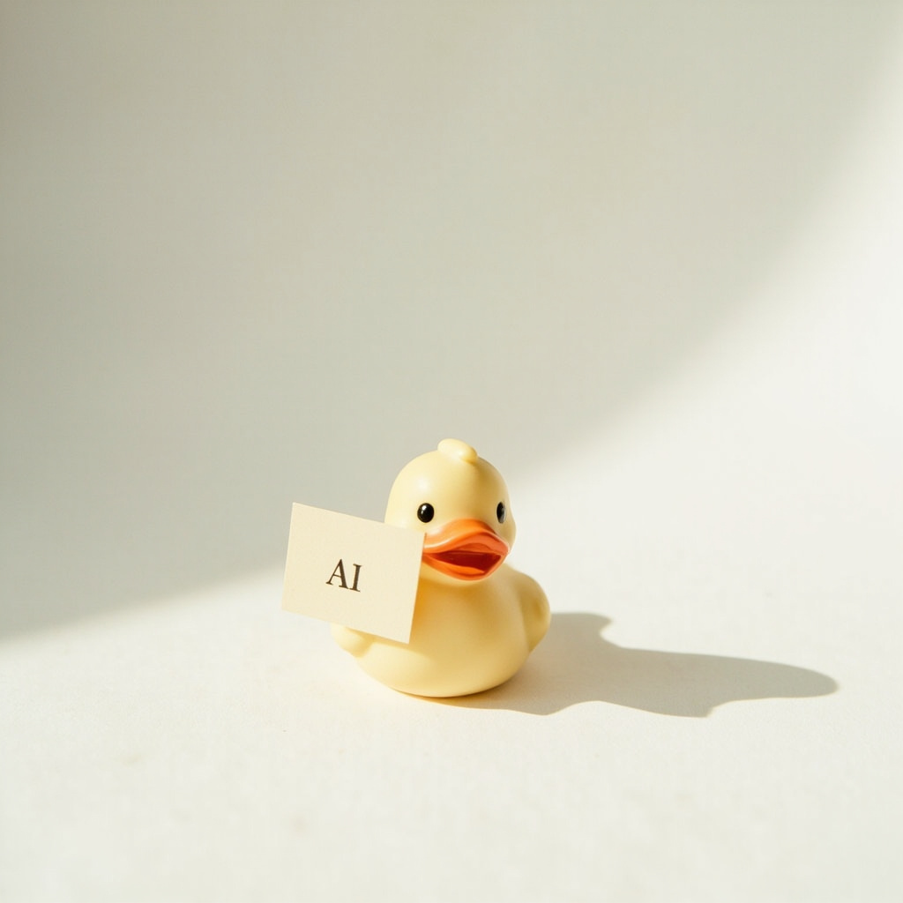
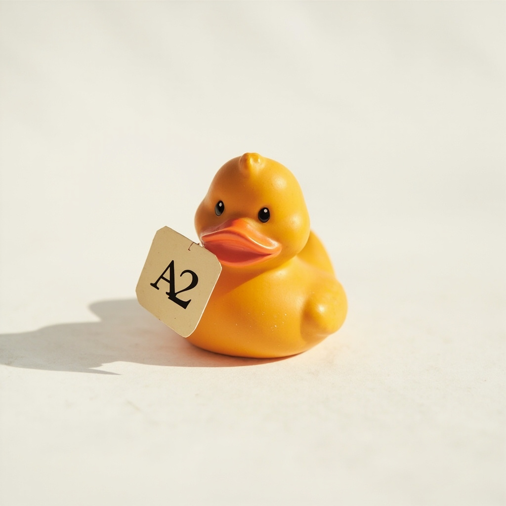
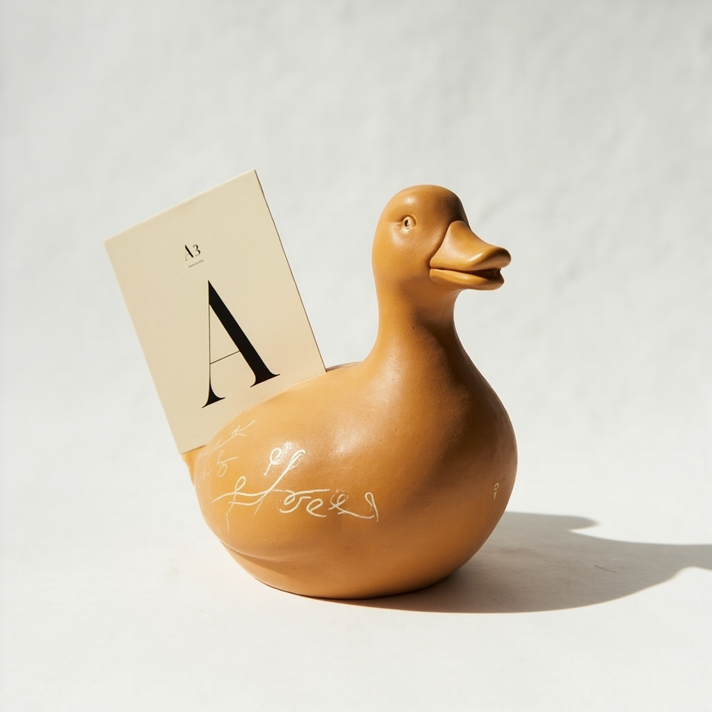
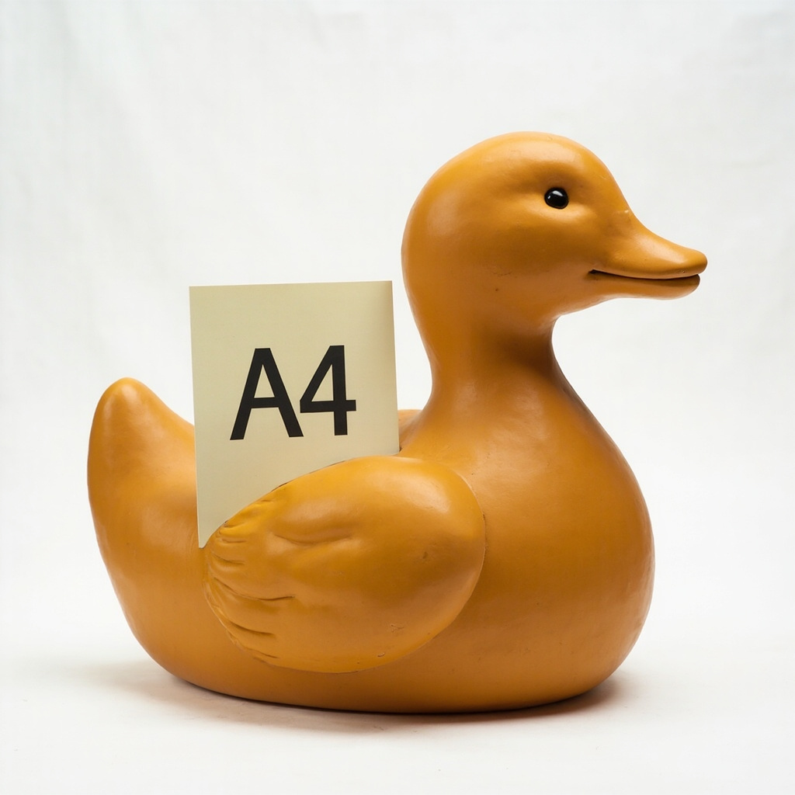
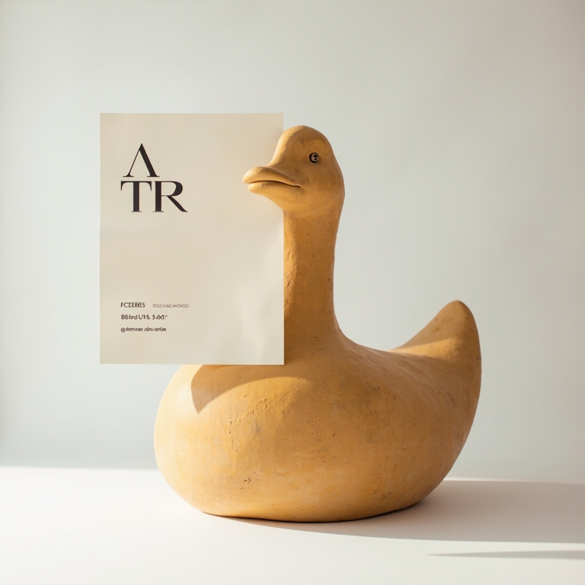

A1 · SIDE A1 · MICRO
Micro
4 cm
keychain chorus
Sleeve note.
PRE-ORDER THIS SIDE →
TRIPLE J / LIKE A COVER
A RUBBER DUCK COVER
Quacktory A-Side — cover programme, in the same sleeve as the size-ladder.
LINER NOTES · TRACK LISTING
The cover programme reads top to bottom — track title, programme credit, artist — the same way every Quacktory SKU reads in the size-ladder: largest, medium, smallest. Click a side to open the sleeve note.

A1SIDE A1 · MICRO
4 cm
keychain chorus

A2SIDE A2 · CLASSIC
15 cm
the workhorse

A3SIDE A3 · DESIGNER
20 cm
couture feature

A4SIDE A4 · MEGA
50 cm
the long take

A5SIDE A5 · ARCHITECT
1.5 m
installation closer
PRE-ORDER · CLOSES WHEN SIDE A5 IS MIXED
The Like a Cover series ships as a five-piece set — Micro, Classic, Designer, Mega, Architect — in a single numbered sleeve. 200 units per release.
RESERVE THE SLEEVEA1 · SIDE A1 · MICRO
4 cm
keychain chorus
Sleeve note.
PRE-ORDER THIS SIDE →